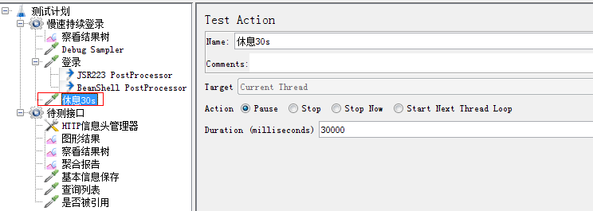

我司采用单点登录用Cookie做身份认证，在进行JMeter性能测试时，仅使用HTTP Cookie Manager仍提示未登录。原因在于单点登录服务器的域名与待测试的服务器域名不一致，Cookie Manager不支持跨域Cookie。本文介绍两种方法来处理。
JMeter 跨线程组共享变量（单点登录Cookie无法保存）
背景
部分待测试的业务接口需要登录信息认证，根据Cookie确认身份，测试时候，业务接口报403没有登录
分析
本来在线程组中加入登录的http请求就可以，但是登录接口的域名跟待测业务的域名不一样，导致默认的Cookie Manager忽略了Cookie，所以出现加入了Cookie Manager后还是无法处理跨域的Cookie。
解决方案
既然自带的Cookie Manager没法处理，就要写点脚本代码来运行了。思路如下
graph TD
A[登录请求]-->B[JSR233 Groovy脚本提取Cookie]
B-->C[存储到线程组变量池]
C-->D[HTTP消息头管理器加上Cookie]

1 | import java.io.BufferedReader; |
简单分析一下上面的groovy脚本，跟Java基本一样，理解上不难。prev是内置的系统变量，vars也是像Map一样的内置变量，但是vars是线程组内可见。

改进方案
上述的改造已经可以完成基本的性能测试，如果进行高压的长时间稳定性测试Cookie也不会超时，但是有可能把比较脆弱的登录接口压垮。
解决方法：将登陆接口单独开一个进程组，一分钟跑一次，得到的Cookie放到properties里面来进行跨线程组共享的目的。
${__setProperty(newCookie,${responsecookie},)};

${__property(newCookie)

小提示：假如会话超时是1分钟，定时执行登录的线程组就行，这里如果用Timer的话就是先暂停后再登录，这样一开始就没有Cookie了。所以在登录之后，应该加一个Test Action来充当sleep。

遗留问题
如果cookie很长，会有性能问题，导致elapsed time和latency time变长。
后面发现我们项目的sso给的cookie都是一级域名的，不存在跨域问题。